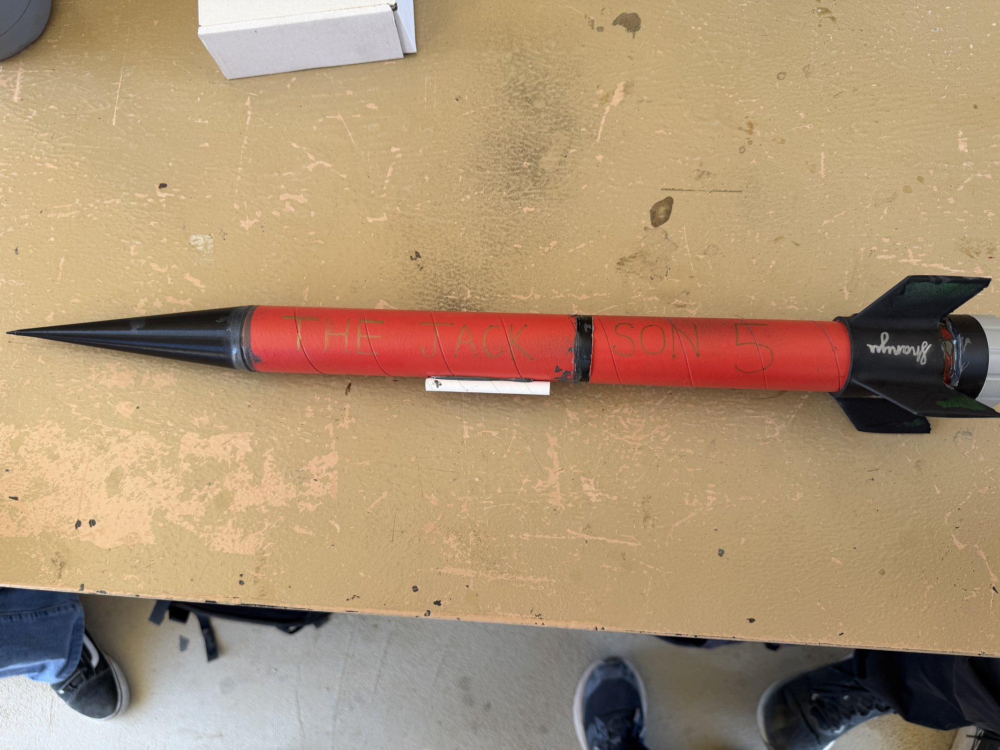
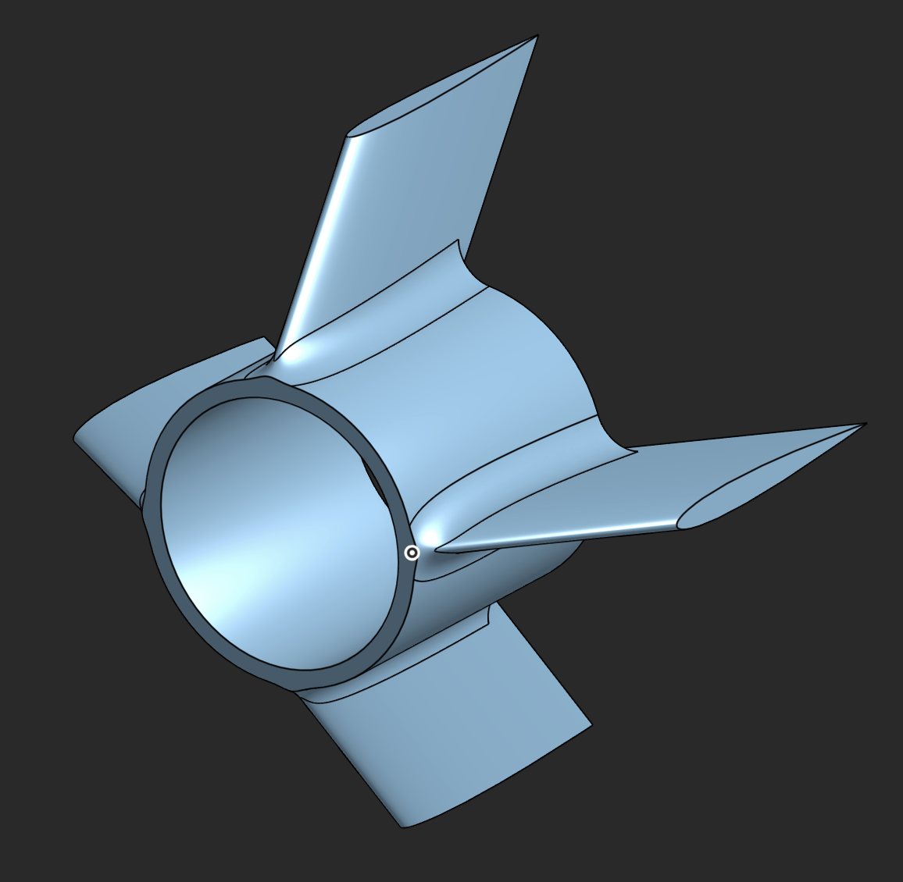
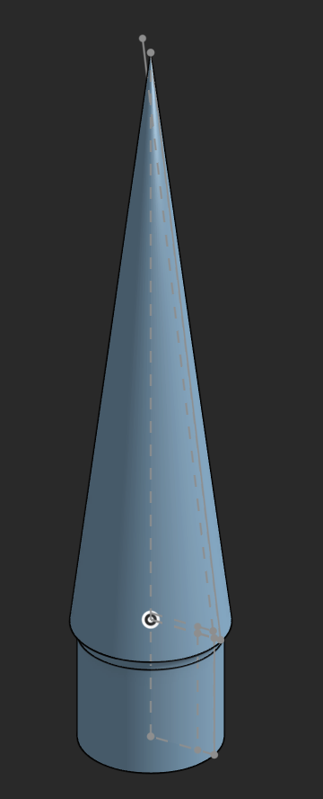

Staged Rockets
Work with the UC San Diego Rocket Propulsion Laboratory, a student club that designs, builds, and flies its own rockets and motors. Two projects: a two stage rocket that separates in flight, and a smaller single stage rocket.
Single stage rocket



A 24.21 in long, 1.6 in diameter rocket on a G class motor (a hobby rocket motor class, roughly 80 to 160 newton seconds of total impulse). The flight was simulated in OpenRocket and MATLAB, then flown at the Friends of Amateur Rocketry site in the Mojave Desert. It reached 900 ft/s and was recovered with its flight electronics intact.
Two stage rocket
A two stage rocket drops its first stage once that motor burns out, then lights a second motor and keeps climbing. The handoff, called staging, is where multi stage rockets most often fail. The club is building a 15 ft two stage rocket for the Spaceport America Cup, the largest collegiate rocketry competition, using a sugar based solid propellant (35% sorbitol / 65% potassium nitrate). Before committing to the full size rocket, the team built a smaller two stage demonstrator to prove the staging mechanism in flight. I work on that mechanism: the hardware that holds the two stages together during the first burn and releases them at the right moment. The design was reviewed with SpaceX engineers. In flight, the stages should separate cleanly, with both stages and the flight electronics recovered. Mechanism details stay private at the team's request until the competition rocket flies.